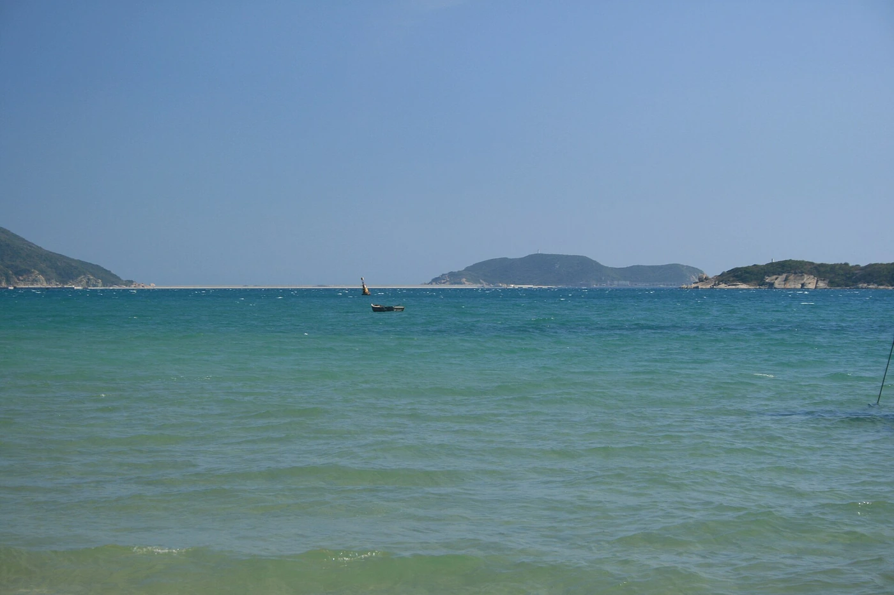

SUGGESTED JOURNEY / 8
东线侨乡与海湾
- DAY 01
海口省博物馆、骑楼老街。
- DAY 02
转文昌，文南老街与文庙，住文昌。
- DAY 03
铜鼓岭或东郊椰林择一，午后转琼海。
- DAY 04
潭门中国南海博物馆，下午海岸慢行。
- DAY 05
转万宁，兴隆植物园与咖啡。
- DAY 06
石梅湾或日月湾休息，住万宁。
- DAY 07
转三亚，所住海湾轻松步行。
- DAY 08
鹿回头或崖州专题择一，按交通安排返程。
THE DESTINATION GUIDE / 华南
热带海岸·黎苗文化·侨乡
海南既有滨海度假，也有火山、雨林和黎族苗族文化。海口骑楼、文昌侨乡与五指山山地能补充只看三亚的单一印象。

海南岛由四周海岸向中央山地抬升，东线较多海湾与侨乡，西线有盐田、港口和相对干燥的海岸，中部则以雨林和黎族苗族社区见长。海口的骑楼、文昌的海外联系、兴隆归侨生活和儋州东坡文化各有历史来源；热带不意味着全岛同一种天气。三沙是另行组织的海上专题，不能与海南岛环线按普通城市方式随意拼接。
沿“海洋往来—移民侨乡—岛内聚落”读骑楼、渔港和归侨文化，再用东坡等人物与文物补充历史。黎族织锦、船型屋和山地稻作各有具体社区背景；火山、珊瑚礁与雨林属于不同自然系统，观察方式也应分别选择。
滨海多选11月至次年4月；夏秋关注台风，雨林全年注意降雨。
7—10天。适合一次主题子线；完整走遍需分次安排。
海口、三亚可作航空入口，环岛铁路适合主要城市间移动，车站到海湾、古村和雨林仍需公路。中部山地不宜按沿海线路顺带穿越；自驾减少日换酒店次数，离岛前留天气余量。西沙只通过正式开放产品与核准行程了解，不自行找船拼岛。
海口老城外围适合骑楼与饮食，三亚按所选海湾和崖州方向择住处。文昌、琼海、万宁可分段连住，中部山地住县城或正式接待点，先了解道路和供餐。临近飞机、跨海船或重要列车时，前夜回主要交通城市。
02 / A JOURNEY, NOT A CHECKLIST
路线为独立主题子线，不建议机械合并。到达日与离开日需按实际交通另留余量。
海口省博物馆、骑楼老街。
转文昌，文南老街与文庙，住文昌。
铜鼓岭或东郊椰林择一，午后转琼海。
潭门中国南海博物馆，下午海岸慢行。
转万宁，兴隆植物园与咖啡。
石梅湾或日月湾休息，住万宁。
转三亚，所住海湾轻松步行。
鹿回头或崖州专题择一，按交通安排返程。
海口抵达与城区休整。
澄迈美榔双塔、罗驿村，住澄迈或福山方向。
转儋州中和镇，看东坡书院与古镇。
洋浦古盐田及正式滨海空间，住儋州。
转昌江棋子湾，留海边慢行。
向东方转场看鱼鳞洲，或延住昌江后返程，不再当天往返海口全部景点。
03 / THE CITY NOTEBOOK
每站展开后可看景点细节、地方味道、行程和实用安排。也可以一口气展开，按自己的节奏读。
共 12 个城市与片区
海口在琼州海峡南岸，骑楼、港口与火山岩村落提供几种不同的岛屿入口。近代侨商把海外建筑经验带回街区，博物馆则能补上更早的海洋往来、岛内历史和多民族生活。火山口公园不只是爬一个山头，玄武岩、洞穴和周边聚落的材料使用值得联系起来看，城市与西部郊野应分日安排。
时长为游览建议，未含全部转场。
从海洋文明、海南历史和风情三个基本陈列选重点，留意沉船、民俗与手工技艺如何互证岛屿交流。黄花梨、沉香等专题是文化观看，不必接购买消费。
沿中山路等街道看廊柱、山墙与商铺尺度，进入支巷可观察居民生活。修缮经营空间与历史建筑并存，留意年代说明，早晚光线和气温更舒适。
沿正式步道看火山锥、玄武岩和植被，先读火山地质示意再看实际地形。与周边石屋村落结合时需明确开放和交通，不任意进入生产区。
认识风味与吃法，再选择餐馆。
细米粉拌入酱汁、花生等配料，软滑中有脆香，先少加辣，观察拌粉与汤粉的不同吃法。
茶或咖啡配面包、点心等，重点在慢坐与家常交流，按自己食量选小份，不必凑完整“套餐”。
椰奶或糖水搭豆类、薯类和果料，清甜多层次，配料可按个人口味调整，冰量也可少些。
第一天省博物馆留足上午，午后休息再去骑楼老街，傍晚茶点和江海公共空间散步。第二天专程火山口方向，选公园加一个正式开放村落即可。去文昌或西线的交通放下午较从容，不同时赶东寨港与火山口两端。
文昌的侨乡身份既写在老街门面，也体现在教育、家族与海内外联系中。文庙、文南老街和东郊椰林能把人物与村落生活连起来，铜鼓岭则呈现东北部海岸和山体。航天带来当代城市叙事，但发射观看受具体任务和现场管理影响，不能把一次未确认发射作为所有行程的唯一支点。
时长为游览建议，未含全部转场。
沿传统商业街看骑楼、店铺和巷道，观察侨乡建筑与本地生活如何延续。老街不是完整封存的博物馆，门面更新和居民日常同样值得看。
看礼制中轴、院落与地方教育纪念，结合碑刻和建筑年代说明理解文昌文教传统。它和老街可组合，但参观时要区分后世维修与原存构件。
从正式观景点看山体、海岸和植被，远眺效果随天气改变。山路、接驳和观景停留均需时间，不把山顶视野与沙滩活动混为同一处。
认识风味与吃法，再选择餐馆。
白切做法体现肉香与紧实口感，蘸汁常带姜蒜或酸味，选择充分熟制，配鸡饭也可作一餐。
米粉配浓淡不同汤汁和肉类，卤香与粉的柔软相合，先问汤式与配料，早餐点小份。
牛肉加工后味浓有嚼劲，可少量作零食，咸度较高，带走看生产、包装与保存要求。
第一天文南老街和文庙，下午东郊椰林择开放村道慢行。第二天铜鼓岭，余时海岸休息后转琼海或返海口。若遇正式发布的航天观礼安排，可替换半天内容，不在不确定消息下连续赶夜路、占用村道。
琼海的万泉河、潭门渔港与博鳌河口呈现内河到海洋的连续关系。渔民的航海知识、造船渔具和海洋信俗适合通过正式展陈理解，博鳌又增加了当代会议城镇的一面。嘉积市区、博鳌和潭门相隔一段公路，不是沿海步行几分钟的同一片街区，选择两处深入比一日跑遍更有层次。
时长为游览建议，未含全部转场。
位于潭门，重点看航海、海洋生活和沉船考古相关材料，把渔具、船型与海洋环境联系起来。专题内容较多，应留充足阅读时间。
在允许的公共岸区观察渔船、修补工具与市集，生产码头不随意进入。清晨与下午的工作节奏不同，拍摄渔民和作业先征同意。
在正式步道看河口、沙洲与海湾关系，注意潮位影响；会址、河口与海滩是不同体验，选一条明确游线，勿跟随非正式船只横渡。
认识风味与吃法，再选择餐馆。
鸭肉以地方饲养和烹调传统见长，白切等做法配蘸汁，留意骨块，按人数点小份。
薯、豆、米制品组合成糖水或糕点，甜度、温度和配料可选择，小份拼尝比连点多碗轻松。
以正规供应的蒸煮海鲜为主，问清重量与计价，保护动物和来路不明食材不在点单范围内。
首日到嘉积或博鳌休整，下午河口开放步道慢行。第二天潭门博物馆上午细看，午后渔港与熟海鲜，再按方向转万宁。万泉河上游活动若想参加，另留一天并选合规项目，不与海口两端之间急赶。
万宁的东部海湾与兴隆内陆侨乡形成互补，兴隆归侨把咖啡、饮食与多地生活经验带入地方。热带植物园不仅是拍照花园，也可认识经济作物与科研；日月湾以冲浪闻名，但浪况并不对所有初学者友好。石梅湾、日月湾、和乐等片区之间仍需转场，海岸休息与文化参观宜各留一天。
时长为游览建议，未含全部转场。
围绕咖啡、可可、香料与热带植物的生长条件看科普说明，区分科研、生产和游览区域。认识一两类作物的全流程比只记奇特植物名称更有趣。
看海湾、林带和村落之间的关系，正式步道适合慢行，泳区与非泳区分别遵守提示。海湾很长，选一段而不追求全部走完。
以海岸观察、合规冲浪课程或轻松休息为主，初学前了解教练、装备和当日浪况。观浪和下水是不同活动，海面热闹不自动适合新手。
认识风味与吃法，再选择餐馆。
米粉配肉汤与肉菜，鲜香柔软，先尝汤底再加调味，适合作早餐，配料按个人习惯选择。
羊肉可焖、炖或煮，地方做法重在肉香和调味，少人出行点小份并搭蔬菜，避免一餐全是肉。
可比较本地烘焙与冲泡风味，黑咖啡、奶咖各有口感，先小杯尝，不用甜度或浓度判断全部品质。
第一天兴隆植物园与咖啡，下午保持轻松节奏。第二天石梅湾慢行，第三天按浪况选择日月湾课程或继续休息后返程。两天停留可在两处海湾中选一处，不为追日落和打卡多个咖啡点反复跨区。
三亚拥有不同朝向和功能的海湾，也有崖州古城、渔港与黎族文化补充度假印象。亚龙湾、三亚湾、海棠湾和崖州之间跨度明显，酒店景观不能代替地理判断。南山主要是当代宗教文化景区，崖州则保留更早的州城记忆；把一天留给城市历史或公共海岸，会比每天围绕酒店与购物移动更丰富。
时长为游览建议，未含全部转场。
选择正式公共岸段看海湾、沙滩和山体关系，泳区活动按当日旗示与管理。海湾度假可留空白，不必把水上项目全部塞进一个下午。
沿开放步道看三亚河口、港区与城市天际线，鹿回头故事属于地方传说。上山、观景与下山都要时间，傍晚风景取决于天气和能见度。
重点看古城门、街道与地方展陈，联系海南南部行政、商贸与移民历史。修复景观与居民生活并存，需辨原存遗迹和当代街区经营。
认识风味与吃法，再选择餐馆。
米粉配鱼饼、肉菜与汤，清鲜柔软，早晨点小份可比较汤底，不必加重辣椒。
鸡肉在椰子水等汤底中煮熟，清甜与肉香相合，食材需充分煮透，蘸汁分放更易尝本味。
选当日正规供应的蒸煮海鲜，点单前核对品种、重量和计价单位，配主食与蔬菜即可完整一餐。
首日抵达后只在所住海湾休息，第二天上午公共海岸，傍晚鹿回头。第三天专程崖州看古城与展陈，若还要南山可增一天或替换一个海湾日。离开当天以附近活动为主，不从崖州远端赶回机场前再跑海棠湾。
海南中南部山地的价值在雨林生态与具体黎族、苗族社区的文化，而不是把村民当作穿民族服装的演员。五指山的山体、保亭七仙岭与织锦技艺展示各有角度，传统村寨也有隐私和生产生活边界。热带雨林国家公园采取分区保护，外围可游不等于所有林区都向游客开放，更不意味着可自行攀登每一座山峰。
时长为游览建议，未含全部转场。
选择有明确入口和管理的步道，看板根、藤本与林下湿润环境，结合科普理解雨林分层。远观山体与高强度攀登不同，按当日许可路线活动。
正式登山步道台阶较多，可按体力选择中途折返，观察森林与岩峰。温泉休闲与登山分开安排，不用泡汤弥补过量运动的疲劳。
看纺、染、织、绣等工序与纹样含义，认识不同社区和传承者，不只买一件印花服装当作织锦。观看或体验按接待安排，人物摄影先获同意。
认识风味与吃法，再选择餐馆。
米与配料置竹筒加热，软糯带竹香，实际主料与馅料各异，趁热吃并选择正规制作。
可做饭食、糕点等，口感和做法依社区不同；若涉及酒类先了解酒精，不需为体验而勉强饮用。
选择明确来源的家养肉、蔬菜与竹笋熟菜，不点不明野味，辣度与发酵酸味可先问后点。
第一天到五指山市区休整并看文化展示，第二天走正式雨林短线。第三天转保亭，第四天七仙岭按体力登山或改温泉休息。只两天则选五指山或保亭一端，不能在一天内攀山、跑两个县城又回三亚夜游。
儋州的东坡文化与古盐田连接文学、农业和海岸生产，昌江棋子湾则呈现西部海岸的礁石与沙滩。苏轼在海南的生活和讲学有文献背景，今日书院又经历后世修建；古盐田可观察太阳、海水和石槽如何形成生产工艺。两地跨度明显，最好用西线连续行进而不每天往返海口，给海岸和古镇各留慢看时间。
时长为游览建议，未含全部转场。
在中和镇读苏轼海南经历、讲学传统与历代纪念，关注碑刻、古树和建筑沿革。书院的文化延续不等于现有每座建筑都来自苏轼时代。
在允许范围看石槽、海岸与制盐展示，了解晒盐对天气和工序的依赖。它仍关联地方生产传统，不踩石槽、不随意取盐或干预作业。
沿正式海岸步道看沙滩、礁石和海湾形态，观景与游泳条件不同，浪大时在岸上远观。晚霞受天气影响，留一段不赶车的黄昏更从容。
认识风味与吃法，再选择餐馆。
细米粉拌肉菜和调味，口感柔软清香，常作早餐，先问配料，辣椒和酸汁可少量加。
地方版本重在米粉与浇头组合，可与市区不同做法比较，份量按小碗尝，不必追求唯一“正宗”。
椰汁与豆、薯或米料组合，甜润中带热带香气，选基础款可比较原料，冰量与甜度按需要调整。
第一天到儋州中和镇看东坡书院与街巷，第二天转洋浦古盐田，下午留海岸公共空间。第三天南下昌江棋子湾并住当地，第四天慢游后向东方或返程。霸王岭雨林另开一日，只走正式开放区域，不与盐田赶在一起。
三沙与海南岛陆地城市的旅行方式不同，旅游应围绕正式开放的西沙航线和核准岛礁了解，不能把市域所有岛屿当作可自由进入的度假区。环礁、沙洲和渔业文化的意义在海洋环境与长期航海活动中，行程主要受船期、海况和管理决定。这里宜作为独立海上专题，而不是环岛自驾途中临时增加的一站。
时长为游览建议，未含全部转场。
只按所订正规产品和当次核准安排登临，观察沙洲、珊瑚碎屑和海岸植被。不同航次可达范围会变化，不将任何一个岛名当作必到承诺。
在允许甲板区域观察水色、云层与远处环礁，联系海图和科普理解浅滩、礁盘与深水的差异。摄影服从船上安全和管理要求。
若产品包含讲解，可结合航海、渔业和生态说明理解岛礁生活；没有安排时以公开展陈资料补充，不进入生产、科研或管理区域。
认识风味与吃法，再选择餐馆。
餐饮以正式产品供应为准，如有蒸煮鱼菜可尝完全熟制的部分，品种和菜单不作固定承诺。
海上旅行优先保证正常规律用餐，蔬菜、主食按船方当餐供应选择，少量多样，不把行程变成猎奇食材搜集。
按船方供应或允许携带的食品补给，水果清洁后食用，包装和果皮全部按船上要求回收，不留在海上或岛礁。
出发前完成正规产品所需手续并确认接待与核准安排，提前到集合城市留交通余量。航程各日依船方组织，岸上只走许可区域；返航后留弹性再衔接远程交通，不自行拼船、跳岛或把永兴岛当普通自由行终点。
东方位于海南西岸，八所港城、鱼鳞洲海岸与内陆黎族传统聚落构成不同观察层次。白查村的船型屋以木竹骨架、茅草与泥墙回应气候和生活需要，技艺传承比“像一条船”的外形更值得看。港城与山地村落相距较远，先按海岸和村落分日，能避免只为傍晚日落而错过建筑与地方生活。
时长为游览建议，未含全部转场。
从许可步道看礁岸、灯塔周边与港城环境，日落视野受云层影响。灯塔与航标设施是否开放应看现场安排，不能因远处可见就自行攀登靠近。
在正式开放范围看屋檐接地、木竹构架、茅草顶与谷仓，结合说明理解防潮、防虫和修缮技艺。房屋不触碰攀靠，拍传承者先询问。
选择允许公众进入的海岸空间看渔船、市场与城市生活，港区生产边界不得越过。它可与市区一顿家常饭组合，不必进入作业码头追近景。
认识风味与吃法，再选择餐馆。
地方烤猪皮香肉润，适合多人小份分享，选择正规熟食，搭蔬菜米饭而非全餐堆肉。
酸瓜与鱼同焖形成酸鲜风味，先问鱼种、辣度与骨刺情况，选择熟透版本。
米粉搭肉汤或卤汁，柔软易食，早餐可先尝小份，配料按个人习惯选择，不强求复杂加料。
第一天到八所休整，下午城市公共岸区，傍晚鱼鳞洲看海。第二天专程白查村，认真读建筑和技艺，午后返市区或继续西线。俄贤岭等内陆山地若要游览再加一天，不在同日赶村落、山岳和日落三段。
陵水的海湾、潟湖与疍家文化让这里不只是三亚旁的度假延伸。新村港一带的舟居、渔业和水上社群历史适合先从博物馆理解，清水湾则提供较轻松的海岸环境。南湾猴岛里的动物与社区生产又属于不同观看场景，三者不必一次全排满；县城、海湾和港口之间仍有明确的公路距离。
时长为游览建议，未含全部转场。
位于新村镇，以船屋构件、渔捞工具和生活材料认识疍家历史，注意舟居到岸居的社会变化。不要把水上生活浪漫化为没有劳动和迁徙的风景。
在许可岸线观察潟湖、渔船和社区，不自行走入养殖渔排。若参加正规文化游或餐饮接驳，先问航段、往返与费用，服从作业通道管理。
选一段正式海岸步道休息，观察海湾、沙滩和背后聚落，游泳只在允许区域。海边度假留半天空白，比连续赶三个离散岸段更舒适。
认识风味与吃法，再选择餐馆。
米粉配酸甜卤汁、花生等，层次丰富，配料和辣度可先问，第一次点小份试味。
蒸煮或煎焖突出海味，点单核对鱼种、份量与计价，完全熟制，餐饮不影响生产作业。
椰香与糯米软糯结合，具体做法因摊点而异，少量作为甜食，搭无糖饮品更易平衡甜味。
第一天清水湾海岸休整，第二天到新村看疍家博物馆和公共岸区，午后慢餐后返程。南湾猴岛若有兴趣可加第三天，动物观看与海湾度假分开，不在赶飞机当天再安排出岛或远端水上活动。
琼中位于海南中部山地，雨林、河源和黎族苗族社区构成与海滨不同的旅行节奏。百花岭的林木与瀑布让人观察热带水热环境，什寒村则能看到高山盆地中的聚落与农事。山地不是全岛同样炎热的延伸，降雨、云雾和温差影响路线；村落文化也应具体到社区，而不是统一的“黎苗风情”演出。
时长为游览建议，未含全部转场。
沿管理步道看森林分层、溪流和瀑布，雨量影响水量，也影响路面湿滑。选择适合体力的短线，不为了拍瀑布跨越护栏到水边。
在开放村道看山地盆地、住宅与田地关系，接待性活动与居民生活分别尊重。若看织锦、农事等体验需提前确认，不默认走进村就有表演。
以森林、科普和许可步道为主，神话与信仰故事可作文化线索，山体与生态按科学说明理解。保护区深处不是自由穿越空间，先核实开放范围。
认识风味与吃法，再选择餐馆。
季节性果品外皮颜色不一定代表成熟度，剥开尝清甜果肉，购买问清产地与当季供应。
米和配料在竹筒中加热，口感软糯带竹香，馅料依社区与做法不同，现做熟食为宜。
米料制成糕点，糯香扎实，作为小份甜点或加餐，若加入其他原料可先问以避过敏。
第一天到营根镇休整，次日百花岭正式步道为主，午后休息。第三天专程什寒村慢看，若再去黎母山则增加一天，或替换百花岭而不同时赶两片林区。返程下山留天气余量，不为了日落再奔海岸。
澄迈的火山岩古村、石塔与福山咖啡呈现琼北另一种面貌。罗驿村石屋和巷道体现就地取材与宗族生活，美榔双塔则提供观察石构、雕刻和地方宗教遗存的机会。咖啡与侨乡往来、种植和消费变化相连，不只是拍照饮品；三个主题都在县域，车辆衔接合理时可用两天慢读。
时长为游览建议，未含全部转场。
从塔身比例、石刻、基座与周围环境看古塔工艺，年代与沿革以正式文物说明为准。塔属保护文物，远观细部即可，不攀登、不拓印和搬动石材。
沿开放石板巷看火山岩民居、宗祠和村落布局，关注材料如何应对气候。仍有居民活动的内院不擅入，修复展示与日常住宅分别辨认。
选择可参观的展陈、种植体验或正规咖啡空间，看咖啡从果实到烘焙冲煮的过程。不同庄园的开放内容不同，生产区域需预约确认。
认识风味与吃法，再选择餐馆。
可先尝不加糖的小杯看烘焙香与苦酸，再选择本地常见奶糖搭配，浓度不等同咖啡品质。
糯米包入肉、豆等料后长时间蒸煮，软糯油润，分切分享更适合，熟粽携带要注意保存。
地方鹅肉可白切、焖煮等，肉香与蘸汁各有特点，点餐先问做法和分量，搭蔬菜米饭。
第一天美榔双塔与罗驿村，午后慢走村巷，住县城或福山方向。第二天咖啡文化开放点与乡间休息，下午接海口或儋州。古村各点之间需车程，若仅一日就选双塔加一村，不再增加多个红树林和海湾点。
没有匹配的城市或关键词，换一个词再试。
环岛并非每天换酒店越多越好；不进入未开放雨林，不购买不明野生动物食品。
正文的参观时长不等于开放时段。博物馆预约、山地天气、交通末班和港澳台或边境通行要求，均应以实际出发时间的官方信息确认。
链接包含内容参考及行前查询入口，不能将其中任一来源视为全部正文的逐句依据。历史与风味为原创编辑概述，时长和路线为规划建议。